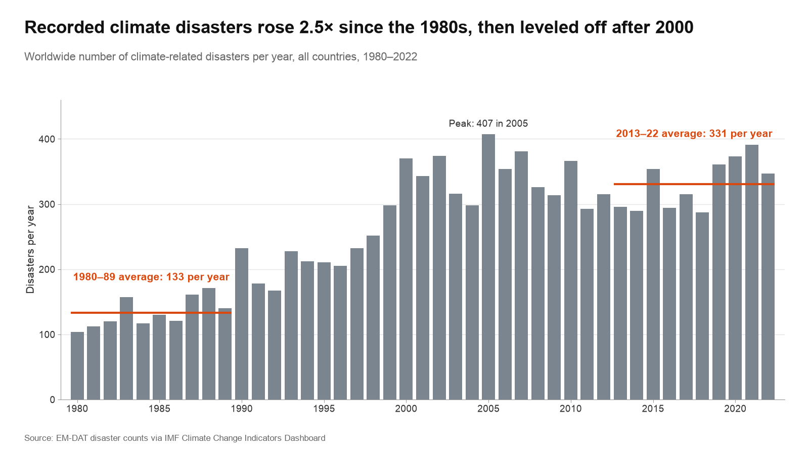
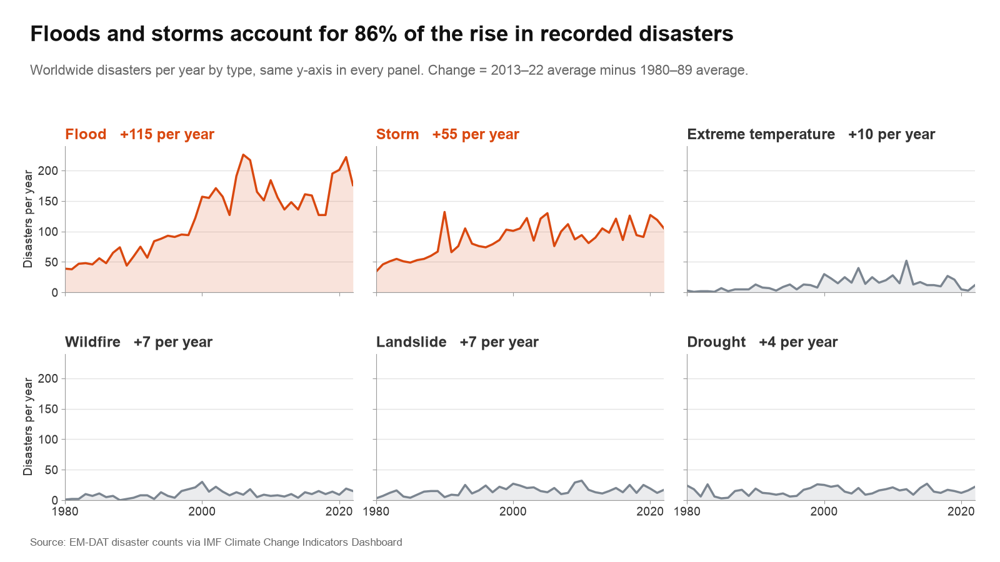
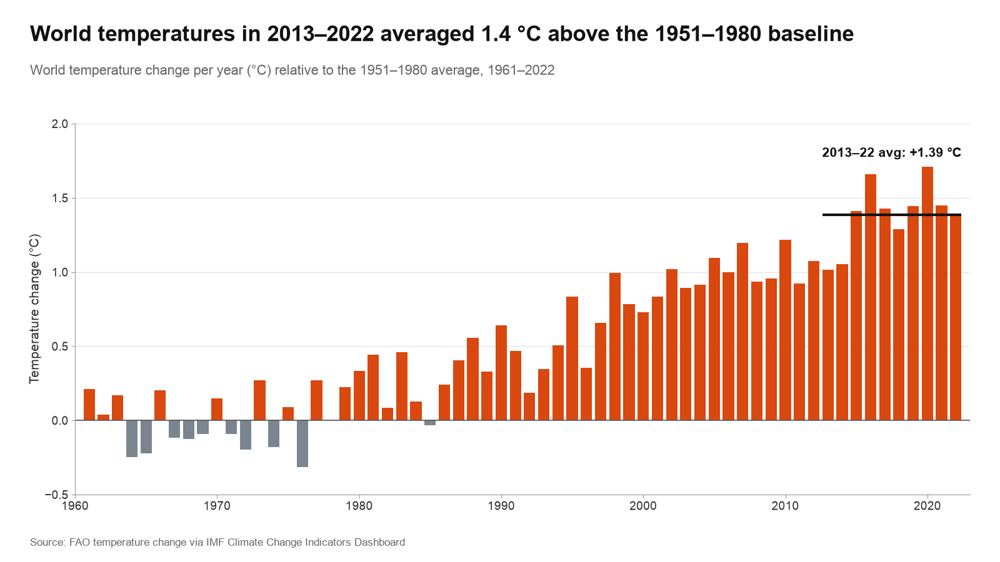
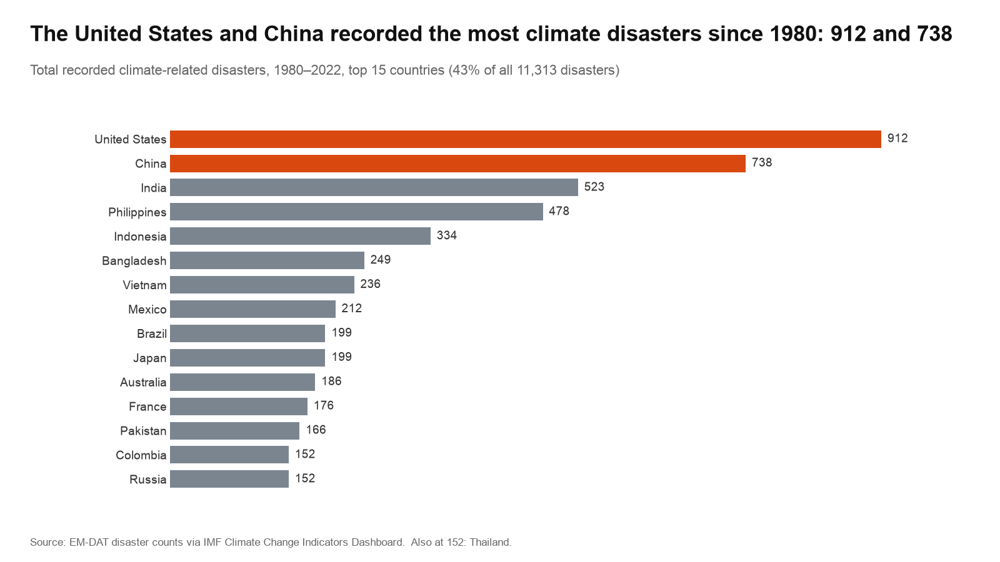
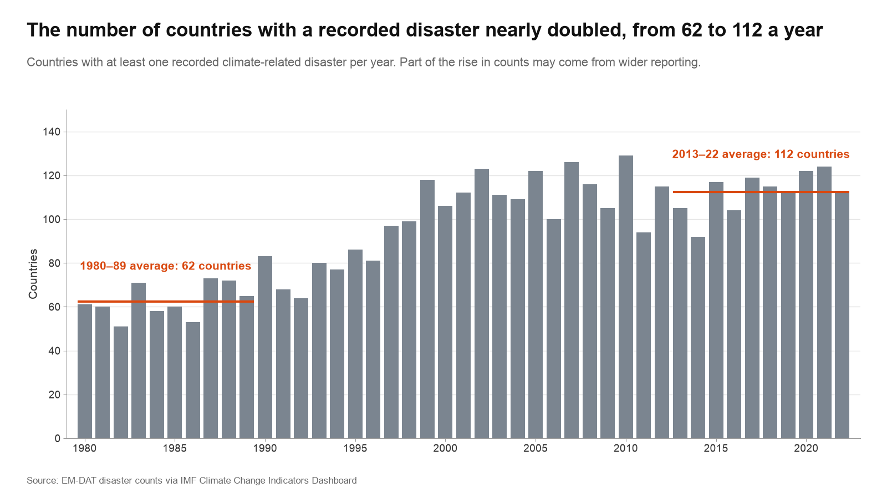
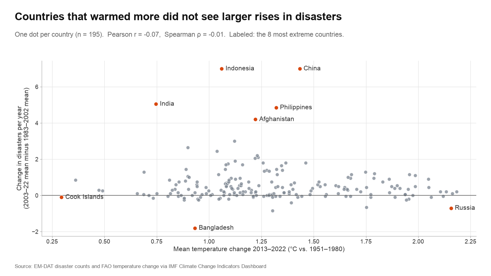

Dataset
We use the IMF Climate Change Indicators Dashboard. It contains two tables that we join by country and year:
- Climate-related disasters (EM-DAT): the number of recorded disasters per year from 1980 to 2022, for 215 countries and 6 types (flood, storm, landslide, drought, extreme temperature, and wildfire).
- Temperature change (FAO): each country's yearly temperature change in °C from its 1951–1980 average.
We use the yearly counts by type and country, the yearly temperature change of each country, and the World totals (the sum over all countries). One caveat: EM-DAT counts the disasters that were reported, and reporting improved over time, especially before 2000.
Exploratory Graphs






Question
Which kinds of climate-related disasters became more common since 1980, and in which countries?
Interactive Chart (Prototype)
Disasters per year by type:
Temperature change from the 1951–1980 average
Countries with the most disasters,
Click a country to show it in the charts on the left.
How to use: type a country or click one in the ranking, click a disaster type to hide or show it, and drag across the top chart to pick a range of years for the ranking (click the chart once to reset). Counts are EM-DAT climate-related disasters, summed over the visible types; World is the sum of all countries. Source: IMF Climate Change Indicators Dashboard (EM-DAT disaster counts; FAO temperature change).
Next steps
- Add a world map colored by disasters in the selected years, linked to the ranking and the time charts.
- Show each country's change between two periods (for example 1980–1999 and 2000–2022), not only totals.
- Add a table view of the selected country's counts, and polish the tooltip and the mobile layout.